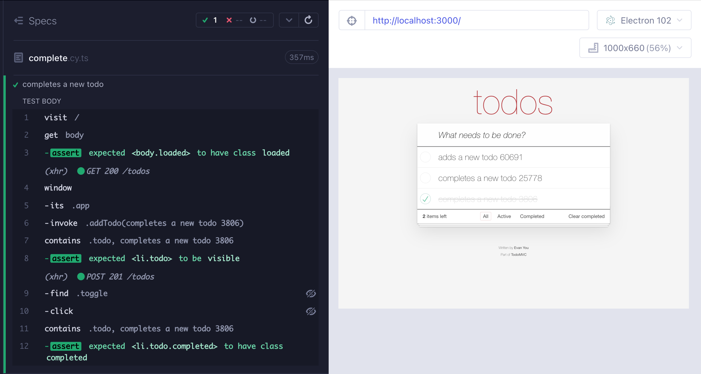

Let's write a few TodoMVC end-to-end tests. Simple, right? I will start by testing adding a new todo. Because the backend is shared by all tests, and we are not resetting the data, I will use random number to ensure the right todo is created.
1 | it('adds a new todo', () => { |
Super, the application is adding todo items.
üéÅ You can find the source code for this blog post in repo bahmutov/ui-to-api-to-app-actions.
Completing items
Let's write a test to verify we can complete an item. Hmm, we need an item. We don't want to write a test dependent on the previous test, so we copy the "adds a new todo" code into new test.
1 | it('completes a new todo', () => { |
The test passes.
Hmm, our two tests have mostly the same code.
UI code refactoring
At this point, people start refactoring their test code to avoid code duplication. They create utility functions or page objects to interact with the "TodoMVC" page.
1 | export const TodoPage = { |
1 | import {TodoPage} from './utils' |
1 | import {TodoPage} from './utils' |
We are creating a hierarchy of code to deal with the page instead of addressing the problem directly: we need a Todo item to complete it.
Use API
Our frontend code is making REST API calls to load and create items. Let's confirm the calls. At the end of the "adds a new todo" test, let's spy on the POST /todos network call and confirm the request object the app sends.
1 | it('adds a new todo', () => { |
Great, we have confirmed the main 2 properties of the API request. We can only confirm the property id exists on the sent object, since it is dynamic and we don't control its value. Here is how we can start the "completes a new todo" test - we will make the item ourselves by making a similar API call:
1 | it('completes a new todo', () => { |
Boom, in a single call we got our item created and ready to be completed. We can then visit the page and interact with the item like a regular user. Let's write a test to delete an item. We need to create an item, and we again can use the cy.request command to make the API call ourselves. To confirm the application deletes the item, let's fetch the items from the server after clicking the delete button.
1 | it('deletes a todo', () => { |
At Mercari US we run a lot of end-to-end tests and we almost exclusively use API calls to create data for the UI tests to use. We use cy.request command to make GraphQL calls.
App actions
How do we know what API calls to make? We spied on the POST /todos network call and inspected the request body. But the request could be complicated. There could be several requests needed to set up data, and we would be adding more complexity to our tests. On the other hand, our application knows how to make a REST API call to create the new data item - it makes it itself when the user clicks the "Enter" key. Why can't our tests use the same code to avoid recreating it? After all, we have already confirmed the page UI is working correctly in the test "adds a new todo", the next test can simply call the code executed when the user clicks the "Enter" key.
To do this, our application needs to let the test call its "actions". In my application code I am setting the app variable on the window object when running inside Cypress test:
1 | if (window.Cypress) { |
The app object is a Vue instance (but the implementation does not really matter, you can expose methods in any framework). Here is my page markup:
1 | <input |
The page calls "addTodo" method when the user clicks "Enter". The implementation of this method grabs the passed value and dispatches Vuex actions to create the item to the server and update the internal data store.
1 | addTodo(e) { |
Ok, do we see this method from the browser? Yes - from the DevTools you can see window.app object with the method addTodo
Anything your application sets as a property of the window object can then be accessed using the cy.window command. In the test below, we get the app's window after we visit the page, from the window object we grab the property app using cy.its command, then invoke the addTodo method using cy.invoke command.
1 | it('completes a new todo', () => { |
The application's code does everything for us: we neither duplicate any logic, nor tie our specs to the implementation details.

Similarly, we can create an item to delete it.
1 | it('deletes a todo', () => { |
The lines calling the application's method are the key to the app action principle.
1 | // execute app action from our test |
If you understand how to apply this concept from Cypress end-to-end and component tests, you will never look back üòâ
Code coverage
You might ask me: aren't we bypassing the application code when calling app actions? Yes we do - but only in some tests. We still exercise the "normal" application code that adds an item in the spec "adding.cy.ts". We then bypass it in other specs that test other features. The combined code coverage when you run all specs together would show 100% code coverage.
Bonus 1: Use cy-spok with network requests
When spying on the API calls made by the application, we could only validate some properties of the request object, since the id is a dynamic random string.
1 | // spy on the API call the app is making to create a todo |
I strongly recommend using cy-spok plugin to validate complex objects. In our case, the ID is a 10-character string of digits.
Let's validate the entire object.
1 | // spy on the API call the app is making to create a todo |
The Command Log shows each property passing its validation

For more cy-spok examples read the blog posts How To Check Network Requests Using Cypress and Server Running Inside Cypress Plugin Process.